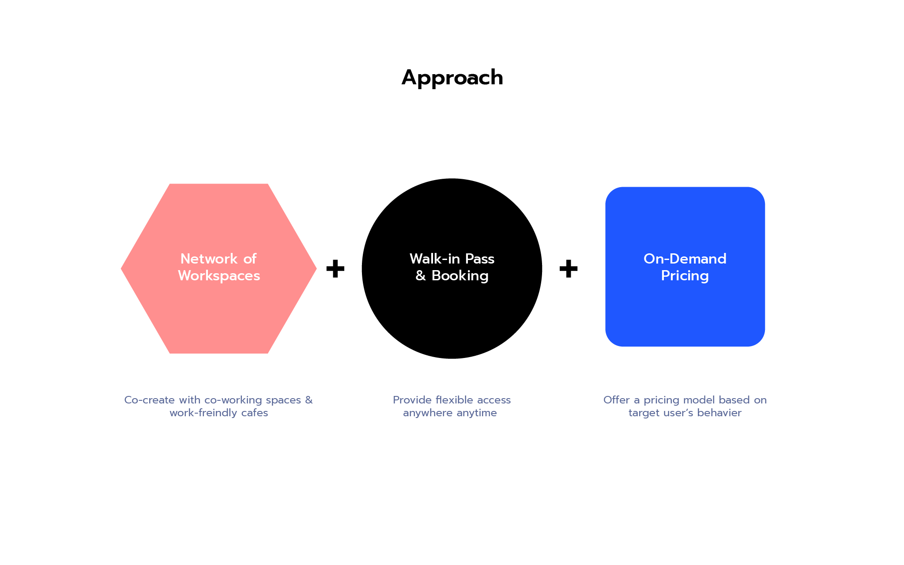
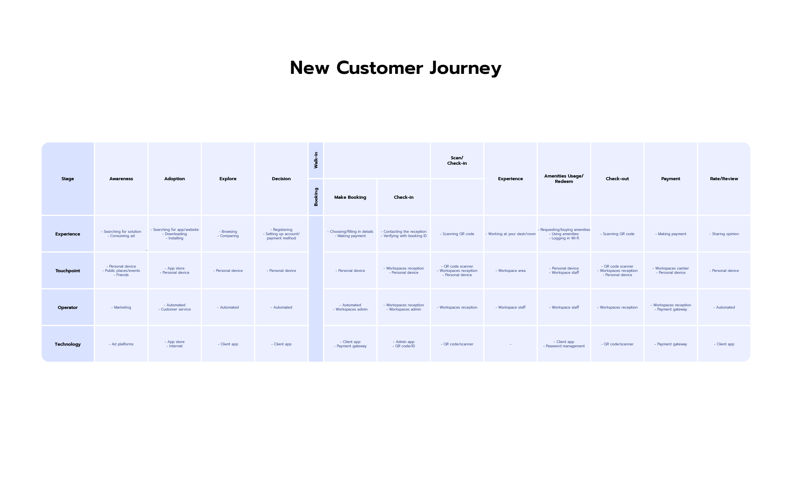
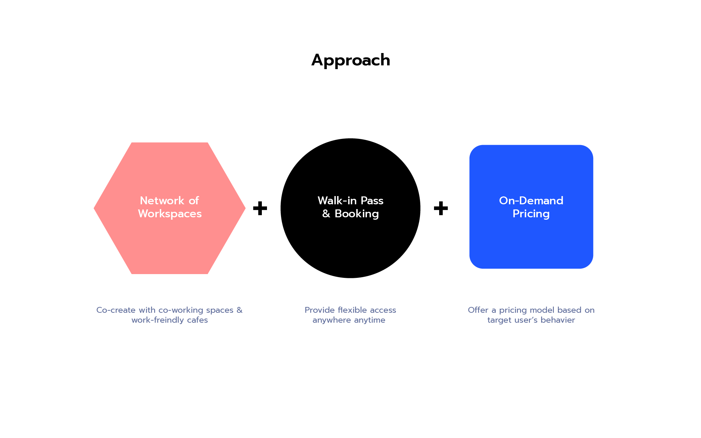
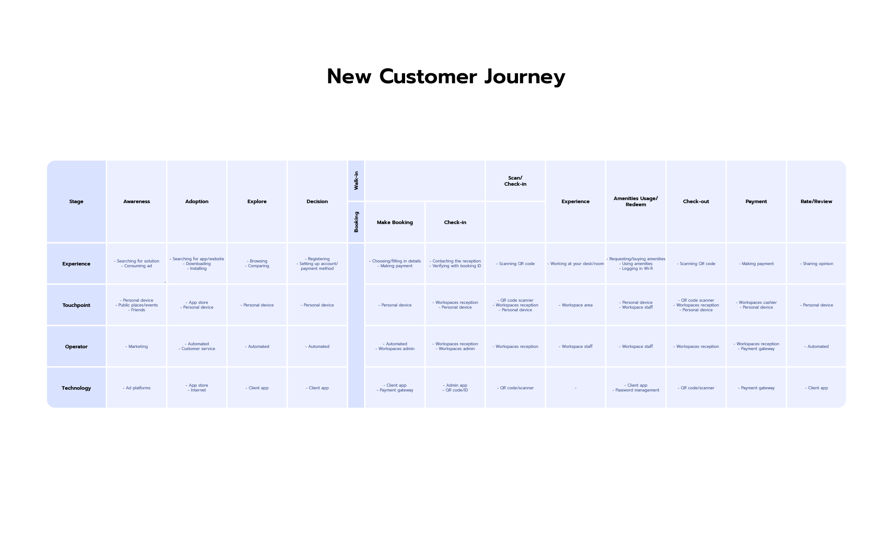

Freshdesk
Workspace On-Demand Platform
UX/UI, Branding, Service Design
Role: Project Co-founder, Designer
Freshdesk, a project started by my friends and me, was a workspace on-demand platform that offers a convenient network of workspaces of any type, unlocking productivity for mobile workers wherever and whenever they need it, with pay-as-you-go pricing.
The project started from my experience as a freelance designer, I often found myself struggling to find a suitable workspace. Cafes like Starbucks were a convenient choice, but they could be too crowded and distracting for me to focus on my work. Recognizing the growing trend of mobility in the modern work culture, I wanted to find a solution to improve the experience of mobile working.
Through the design thinking process, I observed and interviewed 20+ mobile workers and 10+ workspaces and cafes to better understand their needs and pain points. We narrowed down our target group to mobile workers between the ages of 20-40 who are often on the go and occasionally need a workspace at different locations. We found that many of them enjoy the cozy atmosphere, tasty food, and convenience of cafes like Starbucks, but they also face common challenges such as a lack of privacy, low productivity, and a lack of facilities. Some prefer more formal workspaces like co-working spaces for more serious work, but they don't find these spaces to fit their on-the-go nature because co-working spaces are not easily accessible, have a cumbersome registering or checking in/out process, and are too expensive for one-time customers who only need to work for a few hours or even a few minutes.
After using tools like persona and user journey to identify pain points and define the problem, my friends and I brainstormed solutions. Our early ideas focused mainly on improving the experience of working in cafes. We tested our ideas with users and ultimately settled on our final approach: a workspace on-demand platform offering a network of workspaces, walk-in passes and booking, and pay-as-you-go pricing.
 
Before prototyping, I created branding and communication designs to reflect our mission of supporting mobile workers and improving their experience. I played with visuals and illustrations that feel fun and inspire them to work. Bright blue and warm orange colors were chosen to represent productivity and warmth.
For a proof of concept, I developed a demo landing page and advertised it on Facebook to gauge the potential market and collect feedback. Product prototypes were then designed based on this feedback, ranging from low to high fidelity.